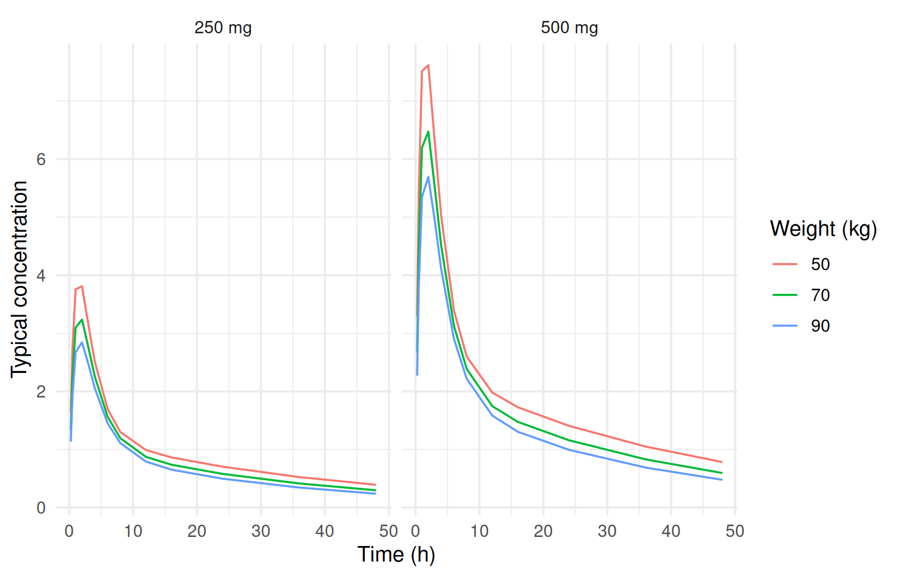
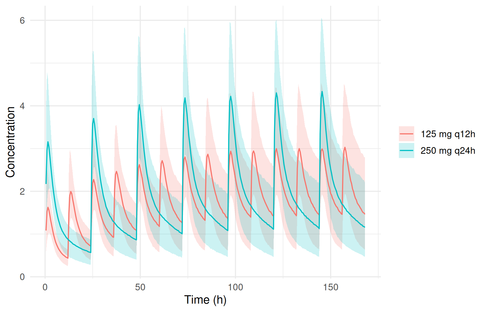
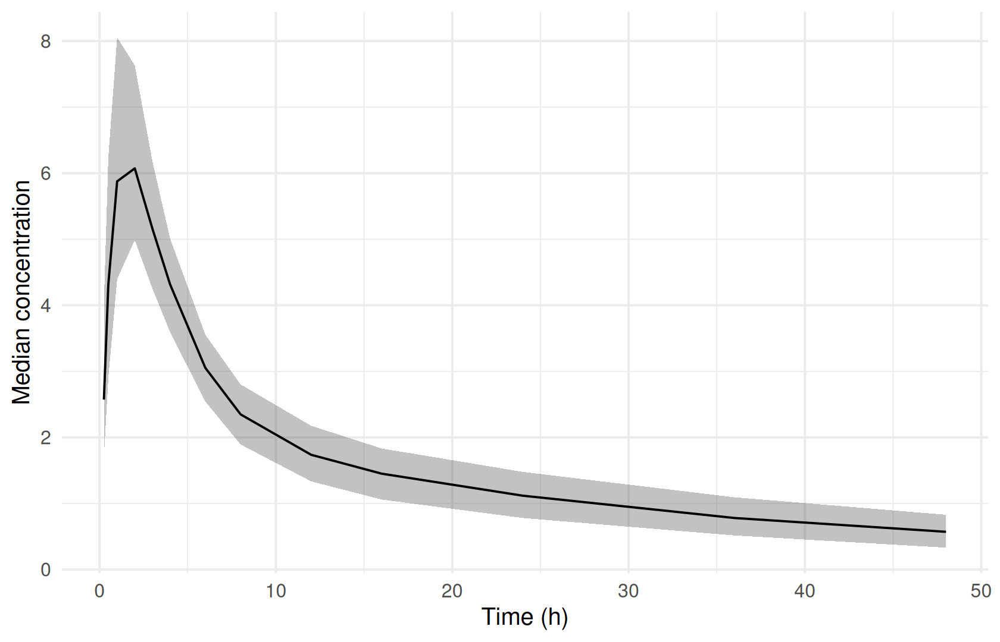

DATA → MODEL → ESTIMATE ⇄ EVALUATE → SIMULATE → REPORT
Simulating scenarios
Where you are
The covariate model is selected (Model development and selection) and its uncertainty quantified (Parameter uncertainty). The purpose of a model is usually to answer questions the study did not test directly. What is the typical profile of a light or a heavy patient? What exposure does another dose or dosing interval give, and how variable is it? How much of that spread comes from uncertainty in the estimates themselves?
In ferx you answer these by simulating from a design dataset: a CSV in the usual data format that describes the virtual subjects, their doses and the times you want predictions at, with the DV column left empty.
The data
cov <- ferx_example("two_cpt_oral_cov")
fit <- ferx_fit(cov$model, cov$data, verbose = FALSE)A small helper builds a design dataset from a table of subjects, one dose record each, with optional II and ADDL columns for repeated dosing:
design_dir <- book_tempdir("simulation")
write_design <- function(subjects, times, file) {
doses <- subjects |>
transmute(ID, TIME = 0, DV = NA, EVID = 1, AMT = dose, CMT = 1, RATE = 0, MDV = 1,
II = interval, ADDL = additional, WT, CRCL)
samples <- subjects |>
select(ID, WT, CRCL) |>
tidyr::crossing(TIME = times) |>
mutate(DV = NA, EVID = 0, AMT = NA, CMT = 1, RATE = 0, MDV = 0, II = NA, ADDL = NA)
design <- bind_rows(doses, samples) |>
arrange(ID, TIME, desc(EVID)) |>
select(ID, TIME, DV, EVID, AMT, CMT, RATE, MDV, II, ADDL, WT, CRCL)
write.csv(design, file, row.names = FALSE, na = ".")
file
}The first scenario is a single dose of 250 or 500 mg for subjects of 50, 70 and 90 kg with a creatinine clearance of 100:
single <- tidyr::expand_grid(dose = c(250, 500), WT = c(50, 70, 90)) |>
mutate(ID = row_number(), CRCL = 100, interval = 0, additional = 0)
single_file <- write_design(single, times = c(0.25, 0.5, 1, 2, 3, 4, 6, 8, 12, 16, 24, 36, 48),
file = file.path(design_dir, "single_dose.csv"))
head(read.csv(single_file), 4)
#> ID TIME DV EVID AMT CMT RATE MDV II ADDL WT CRCL
#> 1 1 0.00 . 1 250 1 0 1 0 0 50 100
#> 2 1 0.25 . 0 . 1 0 0 . . 50 100
#> 3 1 0.50 . 0 . 1 0 0 . . 50 100
#> 4 1 1.00 . 0 . 1 0 0 . . 50 100Minimal runnable call: typical profiles
ferx_predict() returns the population prediction PRED (all random effects zero) for every observation row of the dataset. With fit it uses the estimated thetas; without it, the model file’s initial values:
typical <- ferx_predict(cov$model, single_file, fit = fit)
#> Warning: ferx_predict produced 1 diagnostic:
#> W_DESIGN_DV: 78 observation row(s) (EVID=0) had a missing DV (`.`/`NA`/blank) and were kept as design points to simulate at. A fit of the same dataset would skip these rows (W_MISSING_DV), so the simulated dataset has more rows than the fitted one. Set MDV=1 on rows that are not sampling times.
head(typical)
#> ID TIME PRED
#> 1 1 0.25 1.651288
#> 2 1 0.50 2.722738
#> 3 1 1.00 3.757633
#> 4 1 2.00 3.808443
#> 5 1 3.00 3.149506
#> 6 1 4.00 2.514853The warning is expected for a design file. Its sample rows have an empty DV with MDV = 0, which ferx reads as “predict here”, and the engine’s data reader says so with the code W_DESIGN_DV. The rows are sampling times, so they keep MDV = 0: a row with MDV = 1 is not predicted at all. Every diagnostic of the data reader reaches the caller this way, on ferx_predict() and on the simulation functions below, and is also kept in attr(typical, "simulation_warnings").
typical |>
mutate(ID = as.integer(ID)) |>
left_join(single, by = "ID") |>
ggplot(aes(TIME, PRED, colour = factor(WT))) +
geom_line() +
facet_wrap(~ paste(dose, "mg")) +
labs(x = "Time (h)", y = "Typical concentration", colour = "Weight (kg)")
Reading the result: variability around a regimen
ferx_simulate() adds between-subject variability and residual error to the design: each design subject is simulated n_sim times with new random effects (Simulation-based evaluation: VPC). The scenario below compares two regimens with the same daily dose for a 70 kg subject: 250 mg once daily and 125 mg twice daily, each for 7 days (II, ADDL):
regimens <- tibble::tibble(ID = 1:2, regimen = c("250 mg q24h", "125 mg q12h"),
dose = c(250, 125), interval = c(24, 12), additional = c(6, 13),
WT = 70, CRCL = 100)
regimen_file <- write_design(regimens, times = seq(0.5, 168, by = 0.5),
file = file.path(design_dir, "regimens.csv"))
sim <- ferx_simulate(cov$model, regimen_file, n_sim = 500, seed = 1, fit = fit)
#> Warning: ferx_simulate produced 1 diagnostic:
#> W_DESIGN_DV: 672 observation row(s) (EVID=0) had a missing DV (`.`/`NA`/blank) and were kept as design points to simulate at. A fit of the same dataset would skip these rows (W_MISSING_DV), so the simulated dataset has more rows than the fitted one. Set MDV=1 on rows that are not sampling times.The same W_DESIGN_DV warning appears, for the same reason: the design rows have an empty DV, so ferx simulates them as design points. It is again recorded in attr(sim, "simulation_warnings").
sim_summary <- sim |>
mutate(ID = as.integer(ID)) |>
left_join(select(regimens, ID, regimen), by = "ID") |>
group_by(regimen, TIME) |>
summarise(p05 = quantile(DV_SIM, 0.05), p50 = median(DV_SIM), p95 = quantile(DV_SIM, 0.95),
.groups = "drop")
ggplot(sim_summary, aes(TIME, p50, colour = regimen, fill = regimen)) +
geom_ribbon(aes(ymin = p05, ymax = p95), alpha = 0.2, colour = NA) +
geom_line() +
labs(x = "Time (h)", y = "Concentration", colour = NULL, fill = NULL)
Summaries come straight from the simulated rows. For example, the trough at 168 h, which is one dosing interval after the last dose of both regimens (144 h and 156 h):
sim |>
mutate(ID = as.integer(ID)) |>
left_join(select(regimens, ID, regimen), by = "ID") |>
filter(TIME == 168) |>
group_by(regimen) |>
summarise(median_trough = median(DV_SIM),
p05 = quantile(DV_SIM, 0.05), p95 = quantile(DV_SIM, 0.95))
#> # A tibble: 2 × 4
#> regimen median_trough p05 p95
#> <chr> <dbl> <dbl> <dbl>
#> 1 125 mg q12h 1.46 0.636 2.79
#> 2 250 mg q24h 1.16 0.476 2.21Options that matter
| Function | Argument | Meaning |
|---|---|---|
ferx_predict() |
model |
Model file |
data |
Dataset or design; NULL uses the model’s [data] block |
|
fit |
Use the fitted thetas; NULL uses the model file’s initial values |
|
ferx_simulate() |
match |
Propensity-score matching of simulated random effects to the observed design (below) |
ferx_simulate_with_uncertainty() |
model, data, fit
|
Model, design and a fit carrying a covariance matrix (or SIR resamples) |
n_uncertainty_draws |
Parameter sets drawn from the uncertainty distribution (default 100) | |
n_sim_per_draw |
Random-effect replicates per parameter set (default 1) | |
method |
"asymptotic" (multivariate normal from the covariance matrix) or "sir" (the fit’s kept SIR resamples) |
|
seed |
Random seed |
ferx_simulate()’s other arguments are described in Simulation-based evaluation: VPC.
Variants
Adding parameter uncertainty
ferx_simulate() treats the estimates as exact. ferx_simulate_with_uncertainty() first draws parameter sets from their uncertainty distribution, then simulates each set with new random effects and residual errors. The DRAW column identifies the parameter set:
sim_unc <- ferx_simulate_with_uncertainty(cov$model, single_file, fit,
n_uncertainty_draws = 200, n_sim_per_draw = 5,
method = "asymptotic", seed = 1)
#> Warning: ferx_simulate_with_uncertainty produced 1 diagnostic:
#> W_DESIGN_DV: 78 observation row(s) (EVID=0) had a missing DV (`.`/`NA`/blank) and were kept as design points to simulate at. A fit of the same dataset would skip these rows (W_MISSING_DV), so the simulated dataset has more rows than the fitted one. Set MDV=1 on rows that are not sampling times.
nrow(sim_unc) == 200 * 5 * nrow(typical)
#> [1] TRUE
length(unique(sim_unc$DRAW))
#> [1] 200The spread of the median profile across parameter draws shows how uncertain the typical prediction is. Here it is for the 70 kg subject on 500 mg:
id_500_70 <- single$ID[single$dose == 500 & single$WT == 70]
sim_unc |>
filter(as.integer(ID) == id_500_70) |>
group_by(DRAW, TIME) |>
summarise(median_conc = median(DV_SIM), .groups = "drop") |>
group_by(TIME) |>
summarise(lo = quantile(median_conc, 0.05), mid = median(median_conc),
hi = quantile(median_conc, 0.95)) |>
ggplot(aes(TIME, mid)) +
geom_ribbon(aes(ymin = lo, ymax = hi), alpha = 0.3) +
geom_line() +
labs(x = "Time (h)", y = "Median concentration")
With method = "sir", the parameter sets are sampled from SIR resamples kept on the fit (Parameter uncertainty). The fit must be made with sir = TRUE and sir_keep_samples = TRUE:
fit_sir <- ferx_fit(cov$model, cov$data, sir = TRUE, settings = list(sir_keep_samples = TRUE),
verbose = FALSE)
sim_sir <- ferx_simulate_with_uncertainty(cov$model, single_file, fit_sir,
n_uncertainty_draws = 100, n_sim_per_draw = 5,
method = "sir", seed = 1)
#> Warning: ferx_simulate_with_uncertainty produced 1 diagnostic:
#> W_DESIGN_DV: 78 observation row(s) (EVID=0) had a missing DV (`.`/`NA`/blank) and were kept as design points to simulate at. A fit of the same dataset would skip these rows (W_MISSING_DV), so the simulated dataset has more rows than the fitted one. Set MDV=1 on rows that are not sampling times.
length(unique(sim_sir$DRAW))
#> [1] 100Matched simulation of observed data
In real-world data, dosing often depends on the patient: higher clearance, more frequent dosing. A plain simulation assigns random effects to subjects at random, which breaks that link. It can then make a VPC look wrong even when the model is right. match reassigns each replicate’s simulated random effects to the observed subjects by propensity-score matching against their estimated random effects. The options are TRUE or "optimal" (recommended), "nearest" and "rank":
sim_matched <- ferx_simulate(cov$model, cov$data, n_sim = 100, seed = 1, fit = fit, match = "optimal")
nrow(sim_matched)
#> [1] 30000Matching needs every subject to have observations, so it works on the observed dataset but not on a design with empty DV:
try(ferx_simulate(cov$model, single_file, n_sim = 2, seed = 1, fit = fit, match = TRUE))
#> Error simulating: propensity-score matching requires finite observations for every subject (to compute posthoc etas); subject '1' has non-finite DV values. A `DV = .` design template carries NaN placeholders — match against the observed dataset instead
#> NULLThe [simulation] block
ferx-core model files can carry a [simulation] block that describes a virtual trial (number of subjects, dose, sampling times). It is used by the ferx command line for simulation-estimation studies. The ferx-r simulation functions do not read it: they always need a dataset.
sim_model <- file.path(design_dir, "with_simulation_block.ferx")
writeLines(c(readLines(cov$model), "", "[simulation]", " n_subjects = 5", " dose_amt = 250",
" dose_cmt = 1", " seed = 1", " times = [1, 2, 4, 8]",
" covariate WT = 70", " covariate CRCL = 100"), sim_model)
try(ferx_simulate(sim_model, n_sim = 1))
#> Error in ferx_simulate(sim_model, n_sim = 1) :
#> No data supplied. Pass `data`, or add a `[data]` block (`path = ...`) to the model file.Build the equivalent design dataset in R instead, as above. See the ferx-core simulation page for the block itself.
Pitfalls
-
Pass
fit. Without it, predictions and simulations use the model file’s initial values (Simulation-based evaluation: VPC). -
Empty
DVis simulated. In a design this is what you want. In an observed dataset, such rows are simulated although a fit skips them, so they have no observed counterpart. SetMDV = 1to exclude rows from both. - Covariates must be in the design. Every covariate the model uses needs a column in the design dataset.
-
Parameter uncertainty is a separate step. Intervals from
ferx_simulate()reflect variability only. Useferx_simulate_with_uncertainty()when the uncertainty of the estimates matters for the question.
Summary
- Build design datasets in R with doses (
AMT,II,ADDL), sampling times, covariates and an emptyDV. -
ferx_predict()gives typical profiles, andferx_simulate()adds between-subject variability and residual error. -
ferx_simulate_with_uncertainty()adds parameter uncertainty (asymptotic or SIR). -
matchkeeps the link between dosing design and random effects when simulating observed data.
Next: Tables and figures turns the results into report tables and figures.
TipReference
- R help:
?ferx_predict,?ferx_simulate,?ferx_simulate_with_uncertainty - ferx-core: data format, simulation